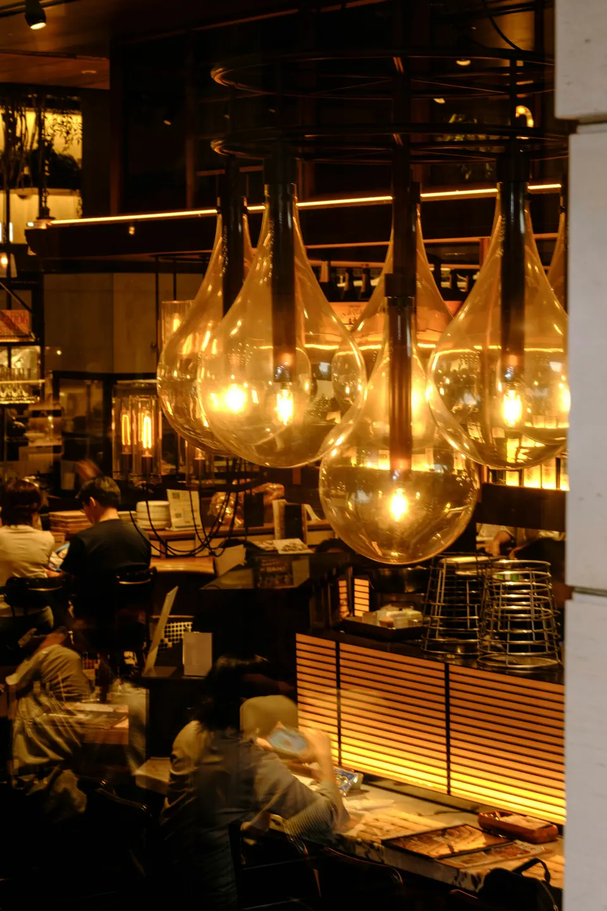
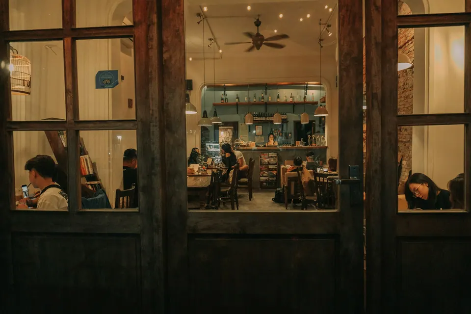
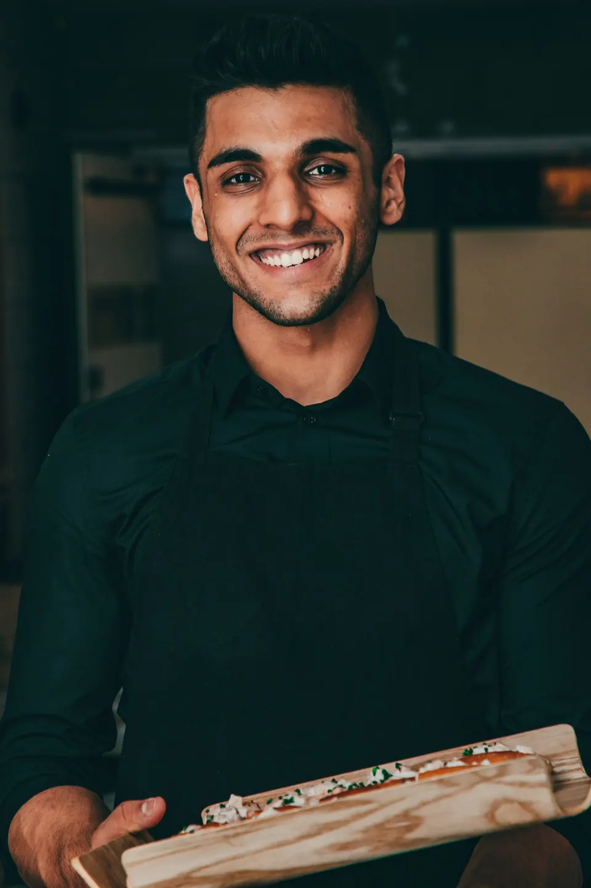
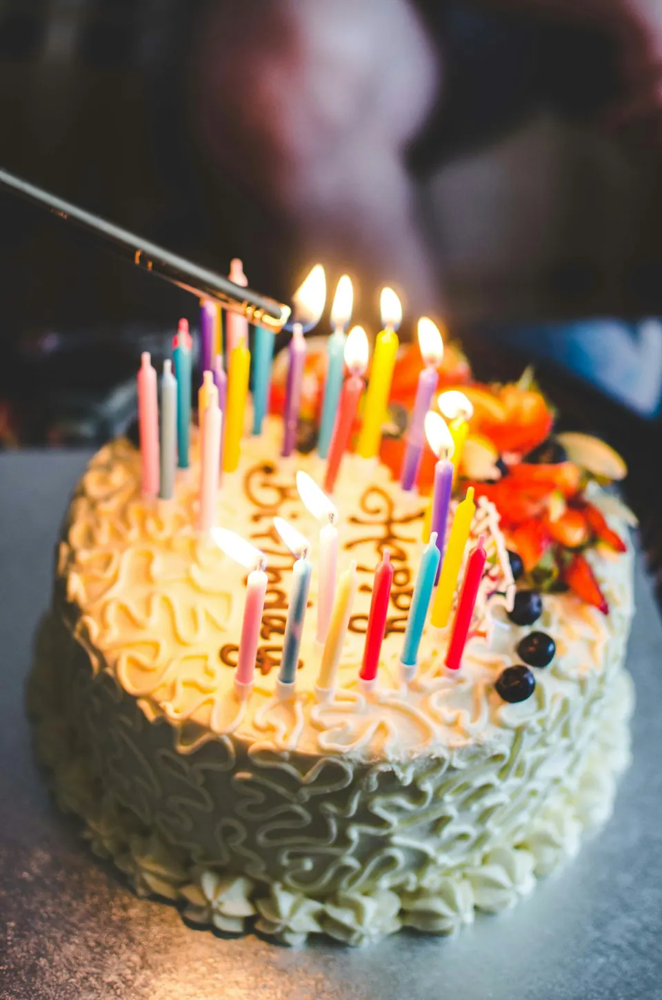
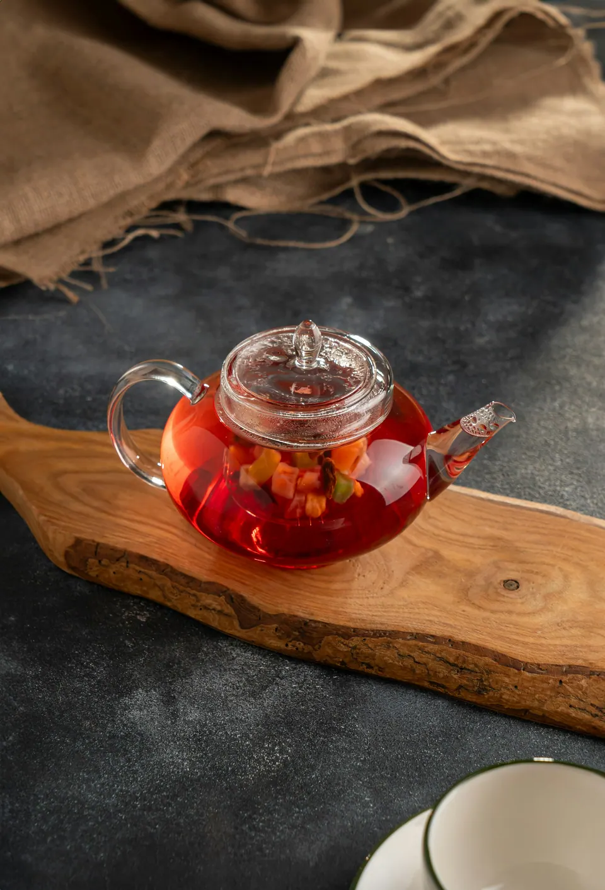
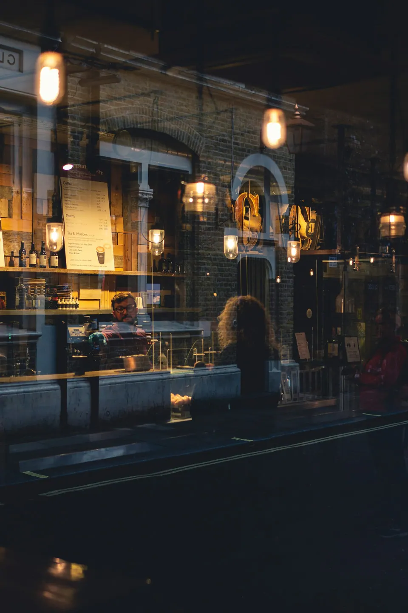
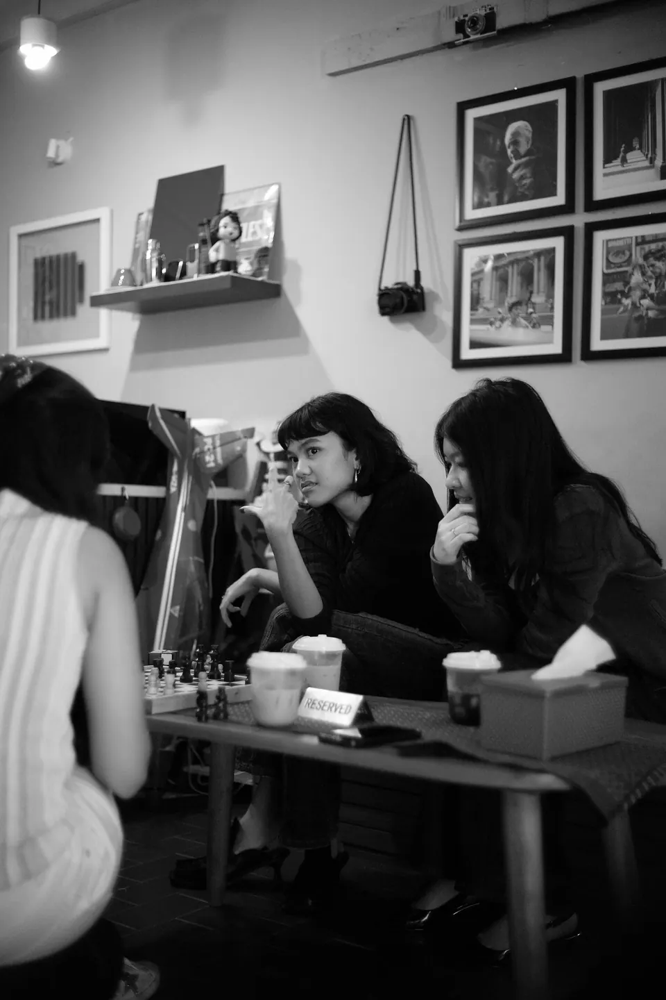
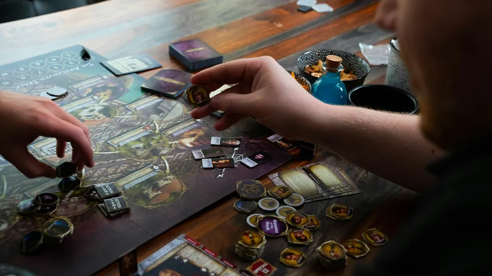
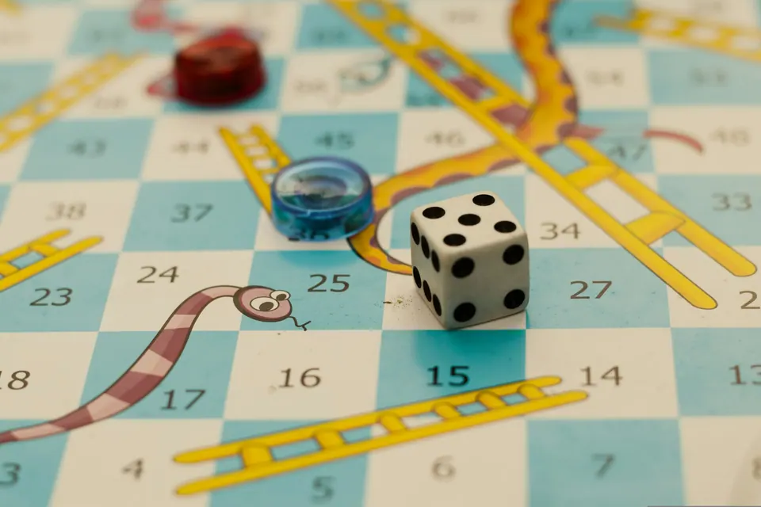

Красноярск · Академгородок
СОСЕДИ
Бар-кафе Соседи в Красноярске. Вечер с соседями — за одним столом
Настольные игры, чай и кухня до часа ночи. Стол для компании — в два касания, без звонка.
Открываемся
С двух часов — чай и шахматы, к вечеру — полный зал и стук кубиков. Сюда приходят всем подъездом: так и появилось название.
- 4,9в 2ГИС — 176 оценок (демо)
- 14–01каждый день, без выходных
- 40настольных игр — бесплатно


Хозяин зала
Дима
Дима объяснит правила любой игры за две минуты и найдёт стол даже в пятницу вечером.
Компания




Дни рождения, встречи одноклассников, игротеки. Стол или весь зал под вашу компанию — условия брони видны сразу, без неожиданностей.
- Стол или весь зал — под вашу компанию
- Условия брони — заранее, на сайте
- Торт и закуски подадут к началу вечера
Вечер
Игротеки по средам, шахматный турнир по воскресеньям и просто вечера с соседями — ближайшие события в афише приложения.


Свои за соседним столиком
4,9 — 176 подтверждённых оценок и 88 отзывов в 2ГИС
Пришли вчетвером на час — ушли в полночь. Игр много, Дима объяснил правила, чай с облепихой лучший.
Отмечали день рождения: торт подали точно к началу, стол уже был накрыт.
Уютно, не шумно, можно с детьми днём. Рёбра — огонь.
В телефоне гостя
Приложение кафе и бот брони в MAX и Telegram: гость бронирует столик, копит баллы, дарит сертификат — а вы видите всё в одном месте.
До завтра
Кафе закрывается в час ночи — и открывается снова в два часа дня. Столик на сегодня можно забронировать прямо сейчас.
- Адрес
- Красноярск, Академгородок, 12 (демо)
2ГИС · Яндекс Карты - Часы
- каждый день с 14:00 до 01:00
- Связь
- +7 391 200-00-00 · Telegram
- Игры
- 40 настольных игр, шахматы — бесплатно для гостей
- Компании
- дни рождения и встречи — по брони